挑几本看得懂的
强化3个随机蓝色【推力】
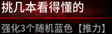
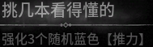
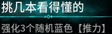
紧贴标题与效果说明，排除确认按钮、限制提示和外围光效。未接入运行任务。三态均展示，不代表每个选项实际都会置灰。
左：原图紧裁；中：资源合成；右：离线比较结果。7 个原图选项均为正确第一名，亮度 ±15% 的 14 个扰动样本均为正确第一名。样本有限，未验证四项实机布局和连续动画帧；数字近似选项仍有很小分差，不应直接据此自动点击。
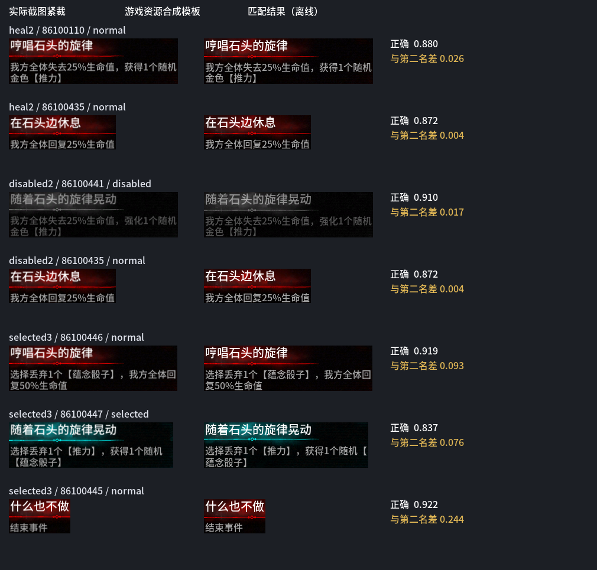
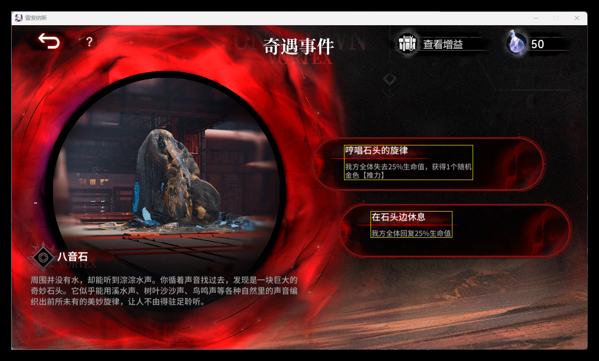
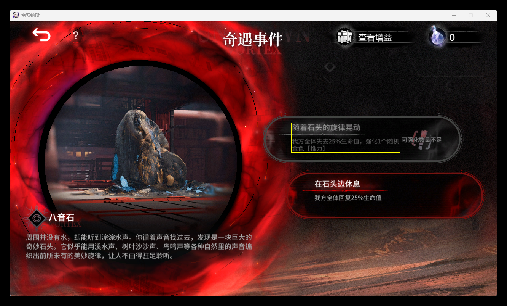
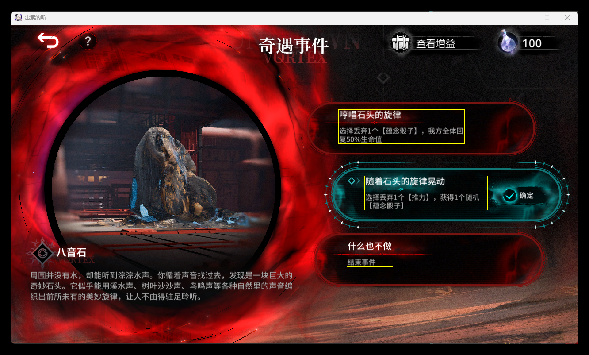
强化3个随机蓝色【推力】



强化2个随机紫色【推力】
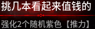
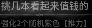
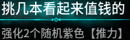
强化1个随机金色【推力】
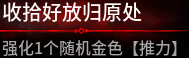
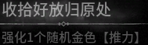
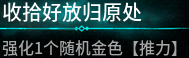
结束事件
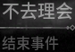
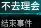
获得60点【尘埃】
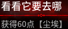
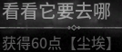
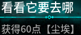
获得1个随机【推力】
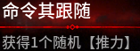
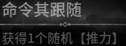
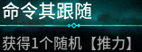
获得50~100点【尘埃】
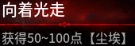
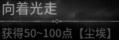
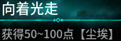
行动回合+1
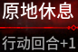
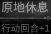
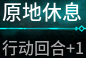
获得1枚随机黑色【蕴念骰子】,获得1个随机紫色或金色【推力】
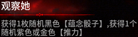
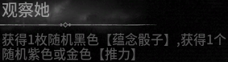
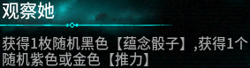
当前行动回合转动次数+1
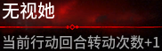
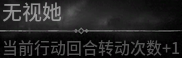
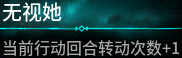
选择丢弃1枚随机【蕴念骰子】，获得1枚随机【蕴念骰子】
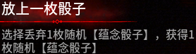
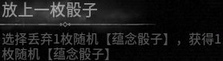
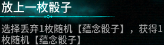
获得50点【尘埃】
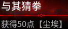
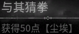
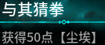
结束事件
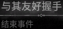
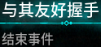
我方全体失去15%生命值，获得1个随机【推力】
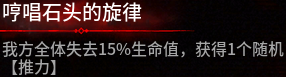
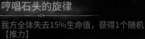
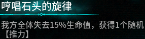
我方全体回复15%生命值
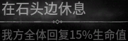
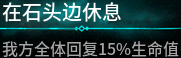
我方全体回复20%生命值
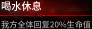
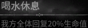
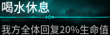
获得100点【尘埃】
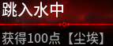
我方全体回复20%生命值
获得1枚随机【蕴念骰子】
强化1个随机【推力】
获得1个随机【推力】
获得1个随机蓝色或紫色【推力】
当前行动回合转动次数+1
行动回合+1
强化1个随机【推力】
从3枚随机【蕴念骰子】中选择获得1枚
从3个随机【推力】中选择获得1个
获得50~100点【尘埃】
当前行动回合移动次数+1
获得1个随机紫色【推力】
获得1枚随机【蕴念骰子】
行动回合+1
强化1个随机【推力】
获得50~100点【尘埃】
获得1枚随机紫色【蕴念骰子】
获得1个随机紫色【推力】
获得60点【尘埃】
强化1个随机【推力】
获得1个随机【推力】
我方全体失去10%生命值，获得100点【尘埃】
当前行动回合移动次数+1
选择丢弃1个蓝色【推力】，获得1个随机紫色或金色【推力】
选择丢弃1个紫色【推力】，获得1枚随机【蕴念骰子】
结束事件
选择丢弃1个【推力】，获得1个随机【推力】
选择丢弃1枚【蕴念骰子】，获得1枚随机【蕴念骰子】
结束事件
我方全体失去10%生命值，获得1个随机蓝色【推力】
我方全体失去15%生命值，获得1个随机紫色【推力】
我方全体失去20%生命值，获得1个随机金色【推力】
结束事件
失去50点【尘埃】，获得1个随机蓝色【推力】
失去100点【尘埃】，获得1个随机金色【推力】
失去400点【尘埃】，获得1个随机橙色【蕴念骰子】
失去60点【尘埃】，获得1个随机【推力】
失去120点【尘埃】，获得1枚随机【蕴念骰子】
结束事件
行动回合-1，获得50~100点【尘埃】
行动回合-1，我方全体回复15%生命值
行动回合-1，获得1个随机紫色【推力】
结束事件
获得1枚随机黑色【蕴念骰子】，强化2个随机【推力】
我方全体失去20%生命值，获得1枚随机【蕴念骰子】
结束事件
我方全体失去20%生命值，强化1个随机金色【推力】
行动回合-1，获得1个随机紫色【推力】
失去140点【尘埃】，获得1枚随机【蕴念骰子】
结束事件
失去100点【尘埃】，我方全体回复20%生命值
选择丢弃1枚【蕴念骰子】，获得1个随机紫色或金色【推力】
选择丢弃1个【推力】，获得1枚随机【蕴念骰子】
结束事件
获得1枚随机黑色【蕴念骰子】，行动回合+1
获得1枚随机黑色【蕴念骰子】，当前行动回合移动次数+1
行动回合-2，获得1个随机金色【蕴念骰子】
结束事件
进入一场战斗，胜利后获得1个随机金色【推力】和100点【尘埃】
跑了，获得1枚随机黑色【蕴念骰子】
进入一场战斗，胜利后获得1个随机【推力】
失去1个随机【推力】，我方全体回复10%生命值
进入一场战斗，胜利后获得100点【尘埃】
我方全体失去20%生命值，获得50~150点【尘埃】
进入一场艰难战斗，胜利后强化3个随机【推力】
进入一场艰难战斗，胜利后获得1个随机金色【推力】
进入一场艰难战斗，胜利后获得1枚随机金色【蕴念骰子】和1枚随机黑色【蕴念骰子】
我方全体失去20%生命值，获得1枚随机黑色【蕴念骰子】
进入一场战斗，胜利后获得1枚随机【蕴念骰子】
失去100点【尘埃】，获得2个随机【推力】
失去200点【尘埃】，获得1枚随机金色【蕴念骰子】
进入一场战斗，胜利后获得1枚随机金色【蕴念骰子】
获得1枚随机【蕴念骰子】
我方全体失去50%生命值，获得1枚随机橙色【蕴念骰子】
获得150点【尘埃】
我方全体失去50%生命值，获得1个随机橙色【蕴念骰子】
获得80点【尘埃】
选择丢弃1枚【蕴念骰子】，获得200点【尘埃】
获得1枚随机黑色【蕴念骰子】，获得200点【尘埃】
选择丢弃1个【推力】，当前行动回合移动次数+1
失去200点【尘埃】，当前行动回合移动次数+2
结束事件
行动回合-1，当前行动回合移动次数+2
结束事件
进入一场战斗，胜利后获得1枚随机金色【蕴念骰子】
结束事件
获得20点【尘埃】，可能会发生些什么
结束事件
失去50点【尘埃】，获得1个随机蓝色【推力】
失去100点【尘埃】，获得1枚随机蓝色【蕴念骰子】
结束事件
失去50点【尘埃】，获得1个随机紫色【推力】
失去100点【尘埃】，获得1枚随机紫色【蕴念骰子】
失去50点【尘埃】，获得1个随机金色【推力】
失去100点【尘埃】，获得1枚随机金色【蕴念骰子】
结束事件
失去50点【尘埃】，获得1个随机蓝色【推力】
存入150点【尘埃】，下次进入收取利息
结束事件
还能存？继续存入150点【尘埃】
进入一场战斗，胜利后获得上次存入的【尘埃】和50%利息
结束事件
进入一场艰难战斗，胜利后获得累计存入的【尘埃】和100%利息
结束事件
选择丢弃1个【推力】，再次遇见可能发生些什么
结束事件
强化2个随机【推力】
获得100点【尘埃】
行动回合+1
全队失去50%生命，获得1枚随机橙色【蕴念骰子】
失去150点【尘埃】，获得1枚随机金色【蕴念骰子】
进入一场战斗，胜利后获得【猩红沙漏】
进入一场战斗
获得50点【尘埃】，没有风险
获得2个随机【推力】，存在风险
失去200点【尘埃】，获得2个随机紫色或金色【推力】
失去200点【尘埃】，获得2枚随机蓝色或紫色【蕴念骰子】
结束事件
尝试用【推力】交换
尝试用【尘埃】交换
结束事件
失去1个随机蓝色【推力】，获得2个随机蓝色或紫色【推力】
失去1个随机紫色【推力】，获得1枚随机蓝色或紫色【蕴念骰子】
进入一场战斗，胜利后获得1个随机紫色【推力】
进入一场艰难战斗，胜利后获得1个随机金色【推力】
结束事件
获得30点【尘埃】
接近她
进入一场战斗，胜利后获得1个随机紫色【推力】
获得1枚随机紫色【蕴念骰子】，可能会发生什么
继续许愿，失去150点【尘埃】
获得150点【尘埃】
获得1件随机金色【推力】
？？？？？
？？？？
？？？
许愿，失去100点【尘埃】
结束事件
获得400点【尘埃】
获得1枚橙色【蕴念骰子】
进入一场艰难战斗，胜利后获得1个随机金色【蕴念骰子】
失去200点【尘埃】，结束事件
我方全体失去50%生命值，结束事件
进行一系列艰难的战斗，如想直接离开需支付代价
结束事件
进入一场战斗，胜利后获得1个随机金色【推力】
失去100点【尘埃】，结束事件
我方全体失去20%生命值，结束事件
行动回合-1，结束事件
我方全体失去25%生命值，获得1个随机金色【推力】
我方全体回复25%生命值
我方全体失去15%生命值，强化1个随机【推力】
我方全体失去25%生命值，强化1个随机金色【推力】
选择丢弃1个【推力】，我方全体回复25%生命值
选择丢弃1个【推力】，获得1个随机【蕴念骰子】
选择丢弃1个【蕴念骰子】，我方全体回复50%生命值
选择丢弃1个【蕴念骰子】，我方全体回复50%生命值
失去100点【尘埃】，我方全体回复50%生命值
失去200点【尘埃】，我方全体回复100%生命值
失去50点【尘埃】，获得1个随机金色【推力】
失去50点【尘埃】，强化1个随机金色【推力】
失去50点【尘埃】，我方全体回复50%生命值